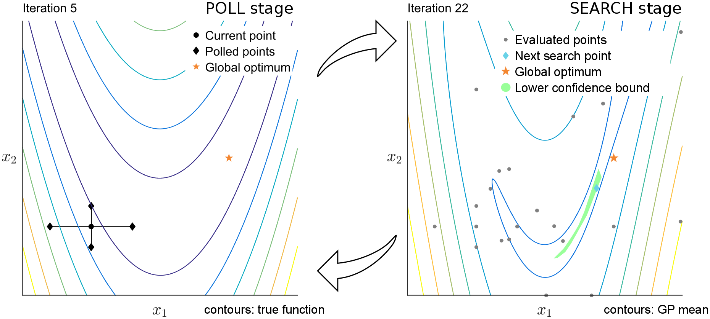

PyBADS#
PyBADS is a Python implementation of the Bayesian Adaptive Direct Search (BADS) algorithm for solving difficult and moderately expensive optimization problems, previously implemented in MATLAB.
What is it?#
BADS is a fast hybrid Bayesian optimization algorithm designed to solve difficult optimization problems, in particular related to fitting computational models (e.g., via maximum likelihood estimation).
BADS has been intensively tested for model fitting in science and engineering and is currently used in many computational labs around the world (see Google Scholar for many example applications).
In our benchmark with real model-fitting problems from computational and cognitive neuroscience, BADS performed on par or better than many other common and state-of-the-art optimizers, as shown in the original BADS paper (Acerbi and Ma, 2017).
BADS requires no specific tuning and runs off-the-shelf similarly to other Python optimizers, such as those in scipy.optimize.minimize.
Note: If you are interested in estimating posterior distributions (i.e., uncertainty and error bars) over model parameters, and not just point estimates, you should check out Variational Bayesian Monte Carlo for Python (PyVBMC), a package for Bayesian posterior and model inference which can be used in synergy with PyBADS.
What’s new in PyBADS 1.1#
Reproducible runs. Every random draw of a run comes from one NumPy random generator, created from the
random_seedoption, so a seeded run gives the same result every time on the same machine and leaves NumPy’s global random state untouched.More precise results with gpyreg 1.3.3. PyBADS requires gpyreg 1.3.3, whose Gaussian process predictions are more accurate when the noise is very small; on several benchmark problems with deterministic targets, runs end closer to the minimum.
A fix for user-specified noise. A run with
specify_target_noise=Trueno longer stops with aValueErrorwhen a point is evaluated a second time.Requirements. PyBADS needs Python 3.10 or newer; the test dependencies are an optional extra,
pybads[test].
The changelog lists what changed since PyBADS 1.0.6, including why results differ from earlier versions and what to check in an existing script.
How does it work?#
PyBADS/BADS follows a mesh adaptive direct search (MADS) procedure for function minimization that alternates poll steps and search steps (see Fig 1).
In the poll stage, points are evaluated on a mesh by taking steps in one direction at a time, until an improvement is found or all directions have been tried. The step size is doubled in case of success, halved otherwise.
In the search stage, a Gaussian process (GP) is fit to a (local) subset of the points evaluated so far. Then, we iteratively choose points to evaluate according to a lower confidence bound strategy that trades off between exploration of uncertain regions (high GP uncertainty) and exploitation of promising solutions (low GP mean).

Fig 1: BADS procedure
See here for a visualization of several optimizers at work, including BADS.
See our paper for more details (Acerbi and Ma, 2017).
Should I use PyBADS?#
BADS is particularly recommended when:
the objective function landscape is rough (nonsmooth), typically due to numerical approximations or noise;
the objective function is at least moderately expensive to compute (e.g., more than 0.1 second per function evaluation);
the gradient is unavailable (black-box function);
the number of input parameters is up to about D = 20 or so.
How-to#
Contributing#
References#
Singh, G. S. & Acerbi, L. (2024). PyBADS: Fast and robust black-box optimization in Python. Journal of Open Source Software, 9(94), 5694. (paper on JOSS).
Acerbi, L. & Ma, W. J. (2017). Practical Bayesian Optimization for Model Fitting with Bayesian Adaptive Direct Search. In Advances in Neural Information Processing Systems 30: 1834-1844. (paper + supplement on arXiv, NeurIPS Proceedings)
Please cite both references if you use PyBADS in your work (the 2017 paper introduced the framework, and the latest one is its Python library). You can cite PyBADS in your work with something along the lines of
We optimized the log likelihoods of our models using Bayesian adaptive direct search (BADS; Acerbi and Ma, 2017), via the PyBADS software (Singh and Acerbi, 2024). PyBADS alternates between a series of fast, local Bayesian optimization steps and a systematic, slower exploration of a mesh grid.
BibTeX#
@article{singh2024pybads,
title={{PyBADS}: {F}ast and robust black-box optimization in {P}ython},
author={Gurjeet Sangra Singh and Luigi Acerbi},
publisher = {The Open Journal},
journal = {Journal of Open Source Software},
year = {2024},
volume = {9},
number = {94},
pages = {5694},
url = {https://doi.org/10.21105/joss.05694},
doi = {10.21105/joss.05694}
}
@article{acerbi2017practical,
title={Practical {B}ayesian Optimization for Model Fitting with {B}ayesian Adaptive Direct Search},
author={Acerbi, Luigi and Ma, Wei Ji},
journal={Advances in Neural Information Processing Systems},
volume={30},
pages={1834--1844},
year={2017}
}
License and source#
PyBADS is released under the terms of the BSD 3-Clause License. The Python source code is on GitHub. You may also want to check out the original MATLAB toolbox.
Acknowledgments:#
PyBADS is developed by members (past and current) of the Machine and Human Intelligence Group at the University of Helsinki and ELLIS Institute Finland. Work on the PyBADS package is supported by the Research Council of Finland (grants 356498 and 358980 to Luigi Acerbi) and its Flagship programme: Finnish Center for Artificial Intelligence FCAI.
Starting from version 1.1, development of PyBADS has been assisted by coding agents, including Anthropic’s Claude Opus 5.5.